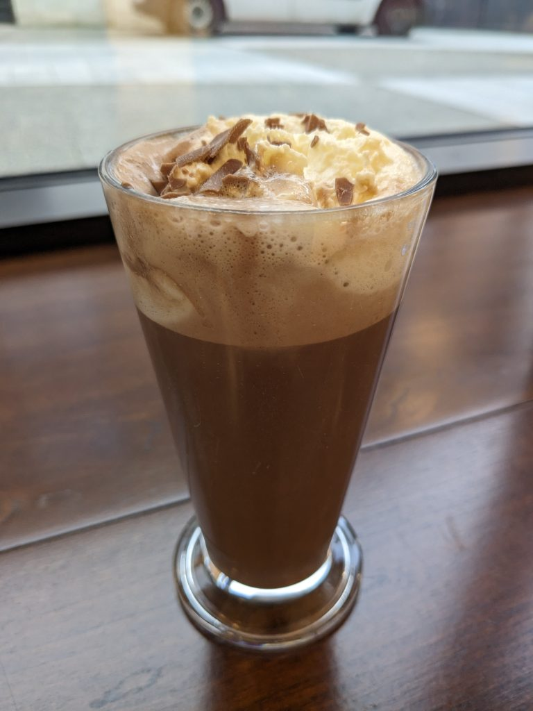
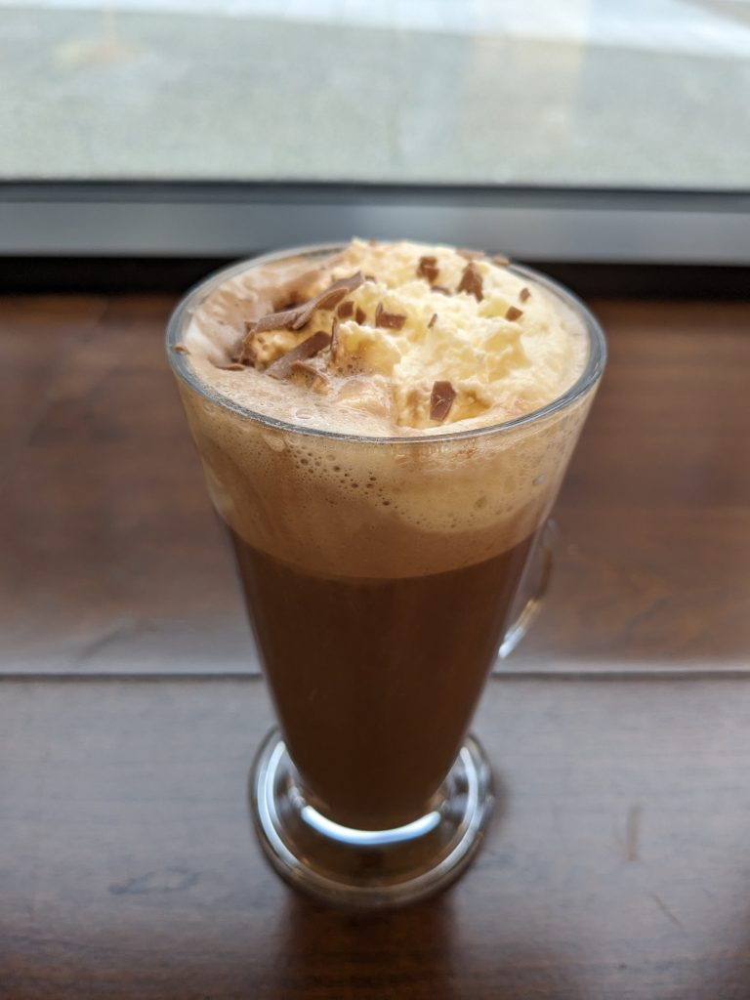

Hot chocolate at Butlers Chocolate Café
A few weeks ago, I went to Butlers Chocolate Café right next to the new Shopping Centre in Bray Town Centre.
Walking in, I immediately noticed how small the Café was. There wasn’t many places to sit and drink.
I had to ask about what options were available for me due to my wheat and peanut allergies. The person behind the counter recommended the hot chocolate. Normally, you would get a free chocolate with it but due to cross-contamination, I couldn’t have one.
In my opinion, they should have them better separated for people like me with severe allergies.


The hot chocolate was very tall and pretty heavy. It had whipped cream and chocolate shavings on top. Right after the first sip, I noticed it was very rich and “chocolatey”. It was quite bitter and heavy on my stomach.
When I had finished it, my stomach was NOT enjoying it whatsoever. After we left, I had to go to the shop to buy a bottle of water.
I much, much prefer a more traditional hot chocolate from a place like Costa Coffee or Starbucks. Butlers was far too much.
Overall, I rate the hot chocolate from Butlers Chocolate Café a 4.5/10. Not my cup of tea, but I see how someone could enjoy it.
Update (5 March 2024):
I have since revisited Butlers, this time getting a takeaway latte. The coffee was quite strong and was scalding hot when I took my first sip. Despite that, it was still enjoyable. However, I’m not changing my rating.